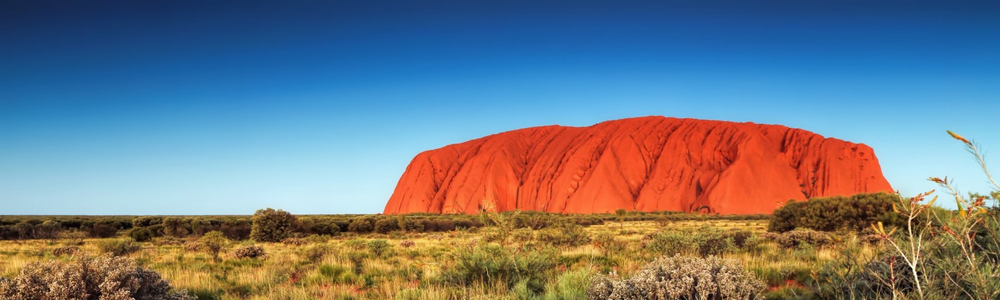
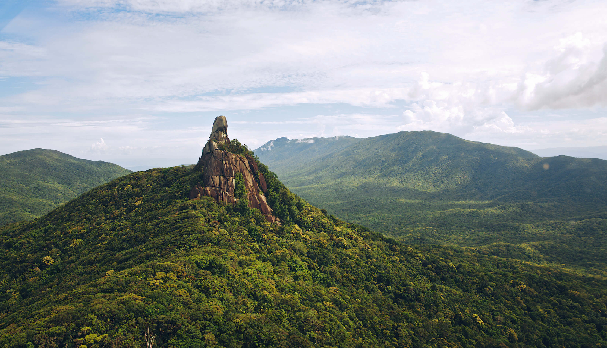

Parque Nacional de Uluru-Kata Tjuta
Es el centro de todo, el corazón físico y espiritual de Australia. Un lugar remoto en medio del desierto que resplandece en medio del outback australiano de profunda trascendencia cultural. Uluru el monolito sagrado de los aborígenes, constituye una peregrinación especial, pero este parque nacional ofrece mucho más; aparte de los Kata Tjuta (monte Olga), hay paseos místicos, sublimes puestas de sol, cielos nocturnos cubiertos de estrellas, hoteles de lujo y antiguas culturas del desierto por descubrir.
Ópera de Sídney

Situado en el Bennelong Point del puerto de Sídney, es el edificio más emblemático de Australia. Obra de Jørn Utzon, este edificio blanco y en forma de velas, que en su día fue todo un hito de la arquitectura, forma parte de un espectáculo visual más amplio, en el que también colaboran el llamativo puente del puerto, el agua azul brillante y los ferris verdes cruzando la bahía. Todo el mundo puede vivir su magia gracias a un bar muy bien situado en la orilla, un famoso restaurante francés, visitas guiadas y un gran programa de espectáculos.
Su credo es “come, bebe y sal de fiesta; al día siguiente, duerme la mona en la playa”.
Selva tropical de Daintree
Desde las espectaculares gargantas cubiertas de selva, los ríos salvajes y las cascadas del Parque Nacional de Daintree hasta la costa desierta de Cape Tribulation a lo largo de la Gran Barrera de Coral, la selva tropical de Daintree es el tramo más grande de la selva tropical de Australia, que abarca 460 millas cuadradas es decir 1,200 kilómetros cuadrados. Un sitio protegido por la UNESCO como Patrimonio de la Humanidad y un paraíso para los excursionistas, la selva tropical es famosa por su extraordinaria biodiversidad.
Parque nacional de Daintree
Es un parque de aventuras para los amantes de la naturaleza. Reserve una visita guiada para aprovechar al máximo la selva tropical. La mayoría de los tours parten desde Cairns o Port Douglas y ofrecen lugares destacados como Mossman Gorge, Cape Tribulation o Marrdja Boardwalk. Los aventureros también pueden descubrir la rica cultura aborigen de la región, hacer tirolesa a través del dosel de la selva tropical, tomar un safari en 4x4, avistar cocodrilos en un crucero por el río Daintree, montar a caballo o caminar por la antigua selva tropical.
Continuar leyendoVida callejera en Melbourne

Melbourne no se parece nada a Sídney. Sus encantos son otros: como los parques y jardines del extrarradio, sus tranvías, su población loca por el deporte, su arte callejero, célebre en todo el mundo, y también los restaurantes de moda, entre los que habrá, seguro, algunas furgonetas de comida. Se podría decir que es la capital artística, llena de galerías, salas de conciertos, librerías y teatros. Las citas obligadas: ver un partido de críquet o de fútbol australiano en el MCG, ir de bar en bar, tomar café y comer en sus restaurantes.